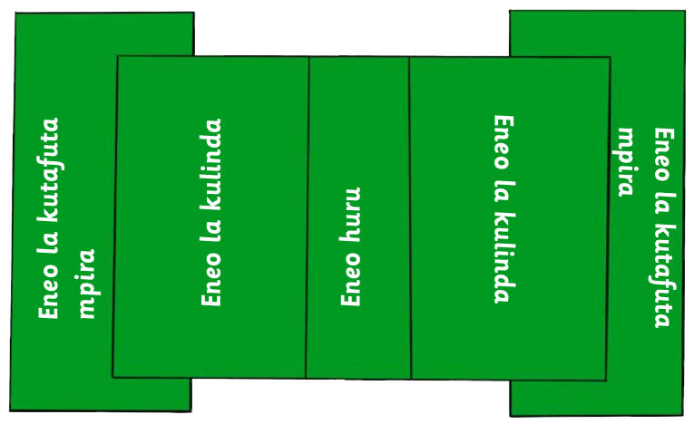
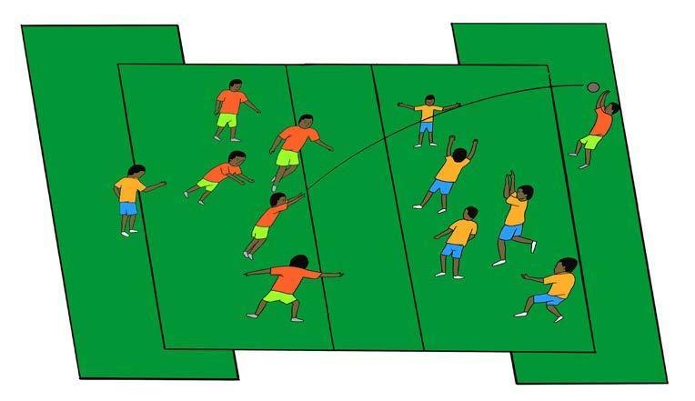
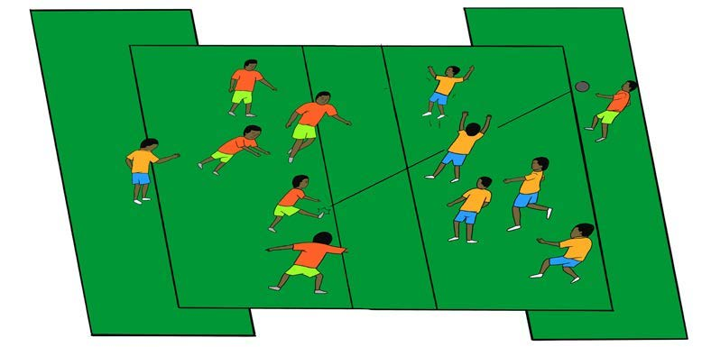

Mchezo wa kutafuta mpira
Mchezo wa kutafuta mpira unahusisha timu mbili. Wachezaji wanatakiwa kutafuta nafasi ya kumpasia mpira mwenzao ambaye yupo nyuma ya timu pinzani. Mchezaji aliye nyuma ya timu pinzani anatafuta mpira ili aiongezee alama timu yake. Mchezo huu unaweza kuchezwa kwa namna mbili, kwa kutumia mikono na miguu.
Sehemu ya kwanza: kwa kutumia mikono
- Andaa mwili kwa kufanya mazoezi ya kukimbia taratibu kwa dakika 2 hadi 3, kisha fanya mazoezi ya kujinyoosha viungo vya mwili.
- Chagua eneo tambarare, kisha chora umbo la H kama linavyoonekana katika kielelezo.
- Unda timu mbili za wachezaji sita kwa kila timu.
- Wachezaji watano kwa kila timu watakaa ndani ya eneo la kulinda na mmoja atakaa nyuma ya timu pinzani kwenye eneo la kutafutia.
- Timu haziruhusiwi kuingia kwenye eneo huru au eneo la kutafutia. Mtafutaji ndiye anaruhusiwa kukaa eneo la kutafutia nje ya eneo la timu yake.
- Kila timu itapasiana mpira kwa mikono ili kutafuta nafasi ya kumrushia mtafutaji wake ili kupata alama.
- Kila timu ina jukumu la kuizuia timu pinzani kupitisha mpira kwenye eneo lake.
- Endapo mtafutaji atadaka mpira atarudi kwenye timu na aliyerusha atageuka kuwa mtafutaji.


Timu inayoshinda ni ile ambayo wachezaji wake wote wamekuwa watafutaji.
Sehemu ya pili: kwa kutumia miguu
- Andaa mwili kwa kufanya mazoezi ya kukimbia taratibu kwa dakika 2 hadi 3, kisha fanya mazoezi ya kunyoosha viungo vya mwili.
- Chora eneo lenye umbo la H kama inavyooneshwa katika sehemu ya kwanza ya mchezo huu.
- Unda timu mbili za wachezaji sita kwa kila timu.
- Wachezaji watano kwa kila timu watakaa ndani ya eneo la kulinda na mmoja atakaa nyuma ya timu pinzani kwenye eneo la kutafutia.
- Timu haziruhusiwi kuingia kwenye eneo huru au eneo la kutafutia. Mtafutaji ndiye anayeruhusiwa kukaa eneo la kutafutia nje ya eneo la timu yake.
- Kila timu itapasiana na kukokota mpira kwa miguu ili kutafuta nafasi ya kumpigia mtafutaji wake ili kupata alama.
- Kila timu ina jukumu la kuizuia timu pinzani kupitisha mpira kwenye eneo lao.
- Endapo mtafutaji atapokea mpira bila kuhusisha mikono atarudi kwenye timu na aliyetoa pasi atageuka kuwa mtafutaji.

Timu inayoshinda ni ile ambayo wachezaji wake wote wamekuwa watafutaji.
Maswali
Shughuli ya tatu
Andaa eneo na timu mbili zitakazoshiriki kucheza mchezo wa kutafuta mpira kwa miguu au kwa mikono. Cheza mchezo wa kutafuta mpira.